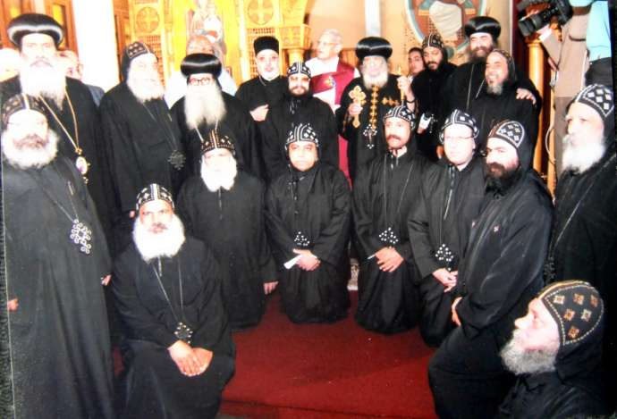

2 Drei neue Mönche für das St. Antonius Kloster/Ts. geweiht Am 22.2.2011 erteilte Seine Heiligkeit Papst Shenouda III drei Novizen aus dem St. Antonius Kloster Kröffelbach die Mönchsweihe. Sie erhielten die Namen Makarius, Shenouda und Kyrillos. Außerdem erfolgte eine neue Namensgebung für den Abt des Klosters, Erzpriester Michael, und den Mönch Ghobrial. Sie führen beide nun den Namenszusatz „St. Antonius“.
St. Markus · 2011 · Deutsch
Drei neue Mönche für das St. Antonius Kloster/Ts. geweiht
Ausgabe 1 · Seite 2
